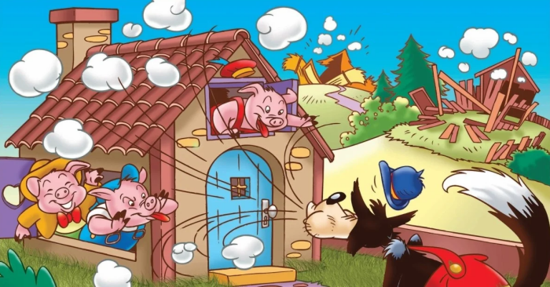

Era uma vez três porquinhos que viviam em uma linda floresta com a mãe. Quando cresceram, decidiram morar sozinhos e cada um construiu a sua própria casa.
A mãe, preocupada com a segurança dos filhos, os alertou sobre o lobo mau que vivia na floresta. "Tenham muito cuidado, meus filhos! O lobo mau é traiçoeiro e eu não vou estar lá para proteger vocês", disse ela.
Os porquinhos saíram em busca do lugar perfeito para construir as suas casas. O mais novo, que só queria saber de brincar e pular, fez uma casa de penas de galinha bem rapidinho.
O lobo chegou à casa do porquinho mais novo e disse: "Saia daí, porquinho! Se não sair, vou destruir sua casa de penas". E soprou tão forte que a casinha foi pelos ares. O porquinho correu para a casa do irmão do meio, que tinha uma casa de madeira, mas o lobo conseguiu destruir a casa com apenas dois sopros.
Os dois porquinhos mais novos correram apavorados para a casa do irmão mais velho, que tinha construído uma casa de tijolo. O lobo, vendo que os três porquinhos estavam todos juntos, exclamou: "Estou com tanta fome, que vou comer os três porquinhos de uma vez". E soprou com toda a força que tinha, mas a casa de tijolos não se mexeu nem um bocadinho.
O lobo, sem desistir, disse: "Não consegui destruir a casa de tijolos e nem derrubar a porta, mas eu tenho outra ideia... esperem que já vão ver!". E começou a subir o telhado em direção à chaminé. Os porquinhos mais novos ficaram aflitos, mas o mais velho, que era muito esperto, colocou no fogão, por baixo da chaminé, um grande caldeirão de água quente com pimenta do reino.
O lobo, ao entrar pela chaminé, caiu no caldeirão de água quente e queimou o bumbum. Ele, então, fugiu o mais rápido que pode para o meio da floresta.
Os dois porquinhos agradeceram ao irmão mais velho e aprenderam a lição. Deste lobo mau, nunca mais se ouviu falar... Até porque, depois de ter queimado o bumbum, o coitado nunca mais foi visto naquelas bandas da floresta.
moral;
u> Essa historinha nos ensina a importância de ouvir os conselhos dos nossos pais.
